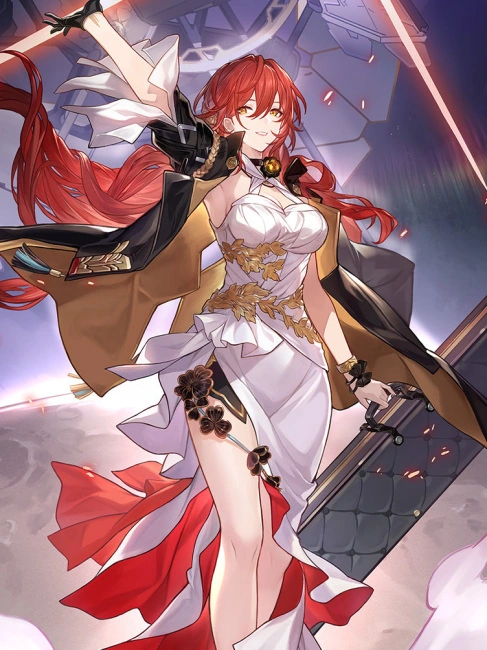
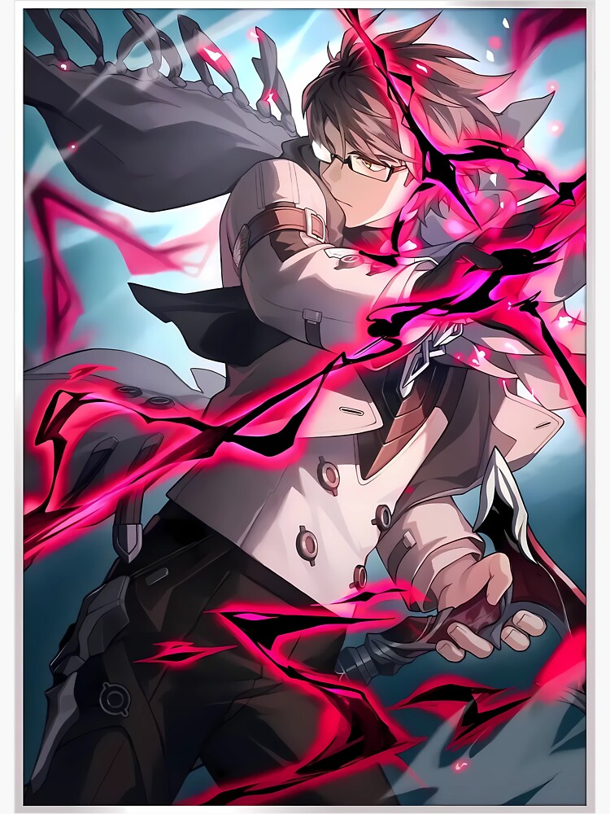
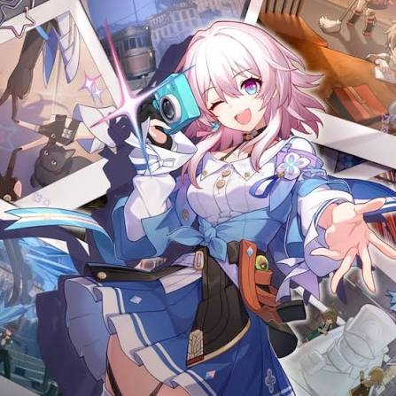
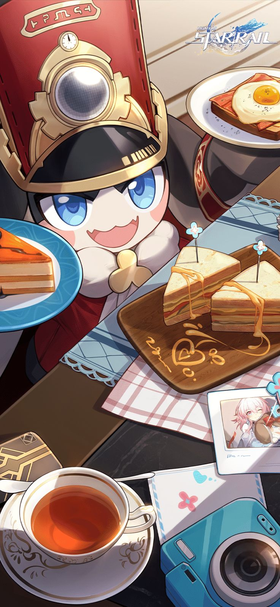

1. Himeko — A Navegadora

Uma cientista destemida que reparou o Expresso Astral em sua juventude e o colocou de volta nos trilhos. Ela é a mentora e o coração da tripulação atual.
Detalhes sobre Himeko
Ela passa muito tempo no salão do trem preparando café fresco para os passageiros enquanto observa as estrelas.
2. Welt Yang — O Passageiro Sábio

Um ex-soberano de outro universo (Anti-Entropy) que possui vasto conhecimento sobre as leis do cosmos e tecnologia avançada. Ele serve como a voz da razão e protetor dos mais jovens.
Detalhes sobre Welt Yang
Welt é apaixonado por animações e histórias de ficção científica de mundos que visita.
4. March 7th — A Fotógrafa Estelar

Resgatada de um bloco de gelo cósmico sem memória de seu passado, March 7th adotou a data em que acordou como seu próprio nome. É energética e obcecada por tirar fotos de tudo.
Detalhes sobre March 7th
Carrega sempre consigo uma câmera fotográfica mágica customizada com pingentes.
5. Pom-Pom — O Condutor

O gerente fofo e dedicado responsável pela manutenção, limpeza e organização geral de todos os vagões do Expresso Astral.
Detalhes sobre Pom-Pom
Fica extremamente estressado se os passageiros esquecerem de seguir as regras de conduta do trem.